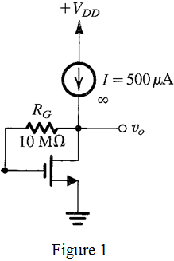

Step 1:
Refer to Figure P5.77 in the textbook for the circuit diagram.
For DC analysis, eliminate the input signal, and open two coupling capacitors to determine the dc operating point. The DC circuit is shown in Figure 1.

Step 2:
Since the current through the feedback resistor is zero, the dc voltage drop across the resistor is zero.
Therefore, .
Write the expression for the resistor,  .
.
Substitute 50 V for  and
and  for
for  .
.
Here, the gate to source voltage is, .
Write the expression for the trans-conductance.
Substitute for  , 0.5 V for
, 0.5 V for  , and 1 V for .
, and 1 V for .
Step 3:
Write the expression for the voltage gain of the circuit.
Substitute for  ,
,  for
for  , and for
, and for  .
.
Therefore, the value of the voltage gain is .
Step 4:
Write the drain current expression.
It is observe that,
Now, consider the following:
Here, the current is increased from to 1 mA, that is, .
Therefore,
Step 5:
Substitute the corresponding values.
Therefore, the value of when drain current increase to 1 mA is .
Step 6:
Calculate

from the relation, .
Consider the following relation:
Calculate the value of  .
.

Step 7:
Calculate the current gain,  .
.
Therefore, the voltage gain when drain current increase to 1 mA is .